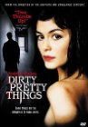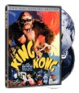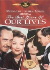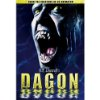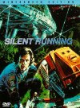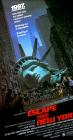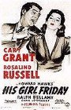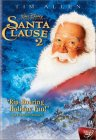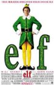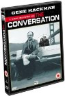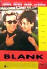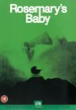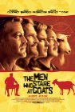
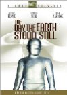
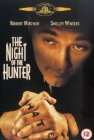
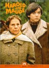
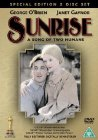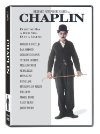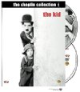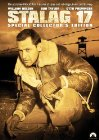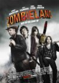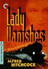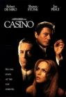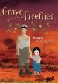
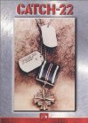
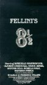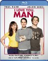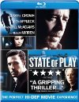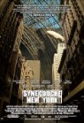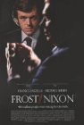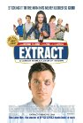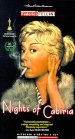
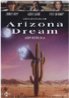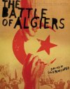
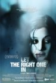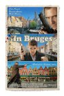
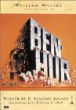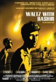
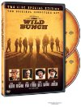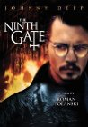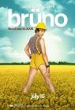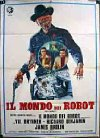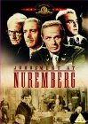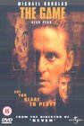
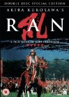
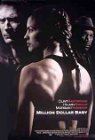
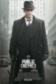
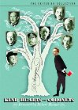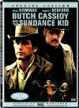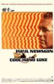
 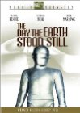
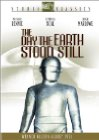 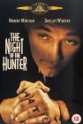
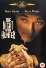 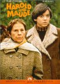
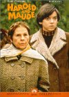 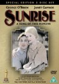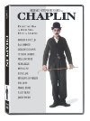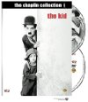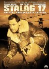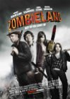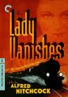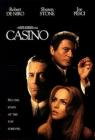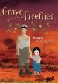
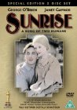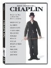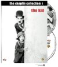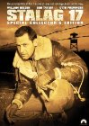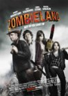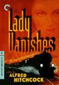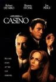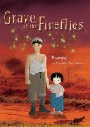, but when I saw Anna the \"ghost\" I immediately thought Wintermute (from Neuromancer).")
 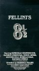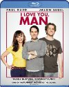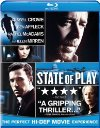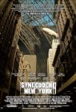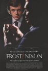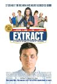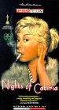
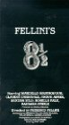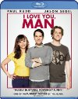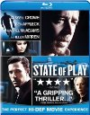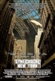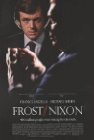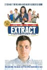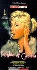 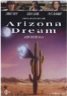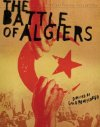
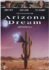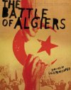 was great. Some of the violence was pretty gruesome even considering it was Terantino. It made me remember having read someone comparing the Nazis watching Nation's Pride cheering the violence against the Allied soldiers to the audience cheering the violence on screen against the Nazis. Anyway, the inferno was pretty impressive and the face projected on the smoke was creepy cool.") 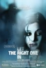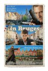
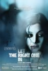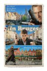 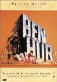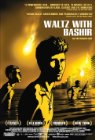
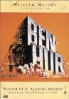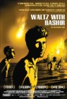
 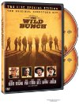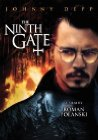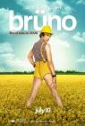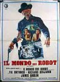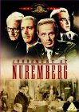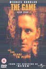
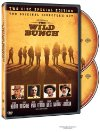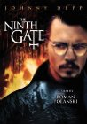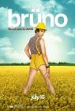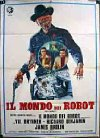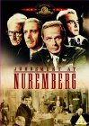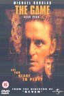 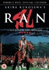
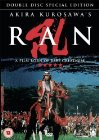 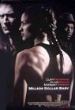
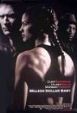 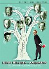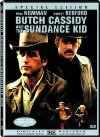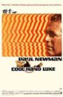
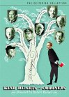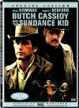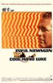
 I can't help but enjoy it some. And my expectations were already so low that disappointment was nearly impossible. What was left was just the fun of seeing things and characters I enjoyed. I can't believe they had Christine from Phantom of the Opera as Bulma and Chow Yun-Fat as Roshi. Chi Chi was really cute. No Krillin unfortunately. Bulma did have her Dragonball radar and her capsule transportation. So, yeah, I wouldn't recommend this to anyone, but I couldn't help but watch it. Kamehameha ftw!")


, and I pretty much don't care for the whole South society and mindset as conveyed. So the whole requiem for the society now \"gone with the wind\" had no appeal to me.
<br><br>
<i>Second Half</i><br>
I think the second half of the movie could have stood just fine without the first half. And I think it was a great movie. Scarlett did become an interesting tragic character. A note on two of the big quotes from the movie. The final line that \"tomorrow is another day\" seems like a stupid subversion of what should have been the last line only a minute earlier: \"Frankly my dear, I don't give a damn.\"")